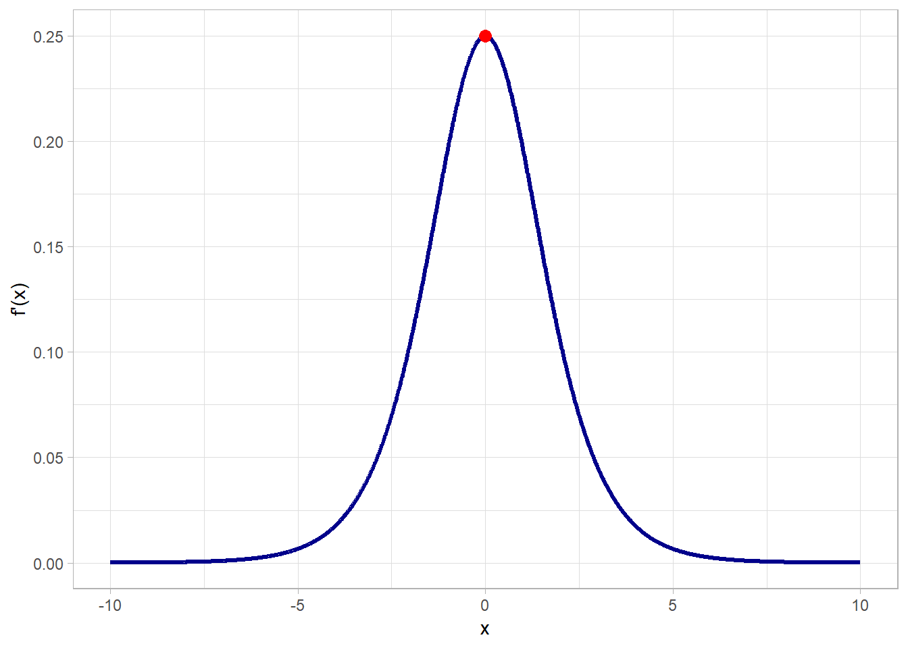
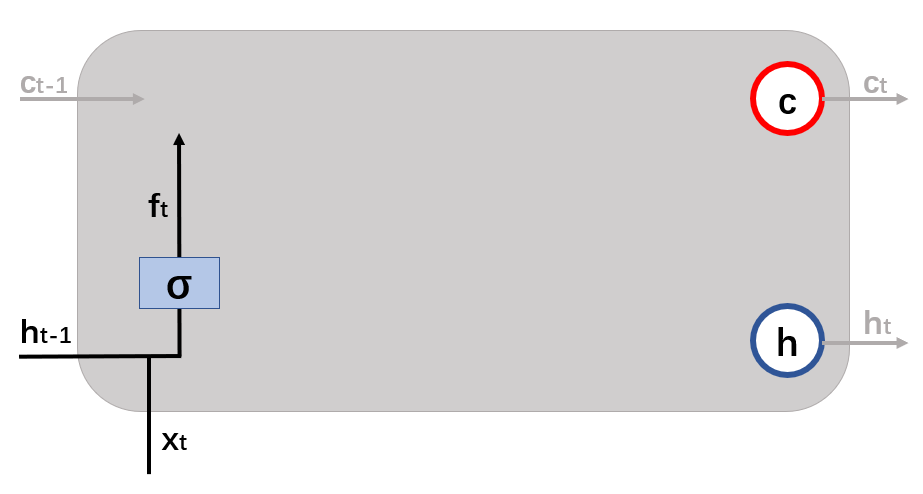
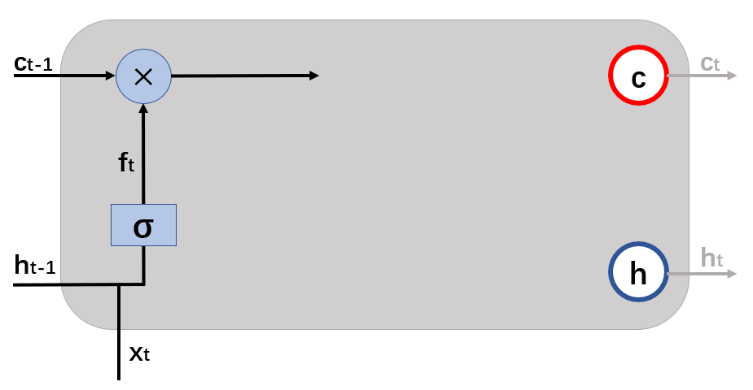
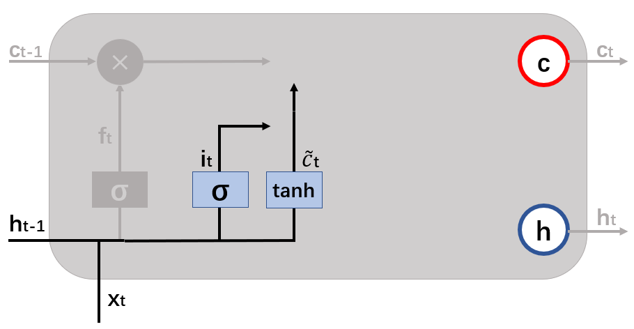
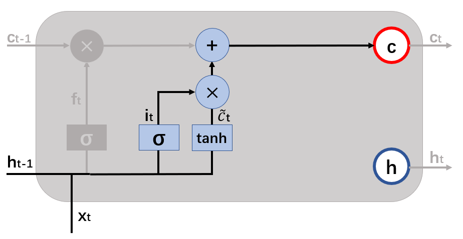
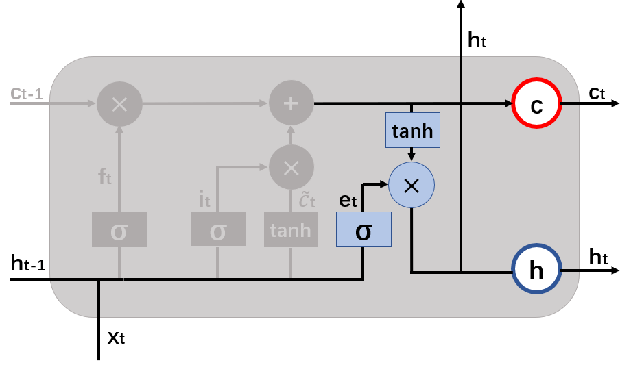
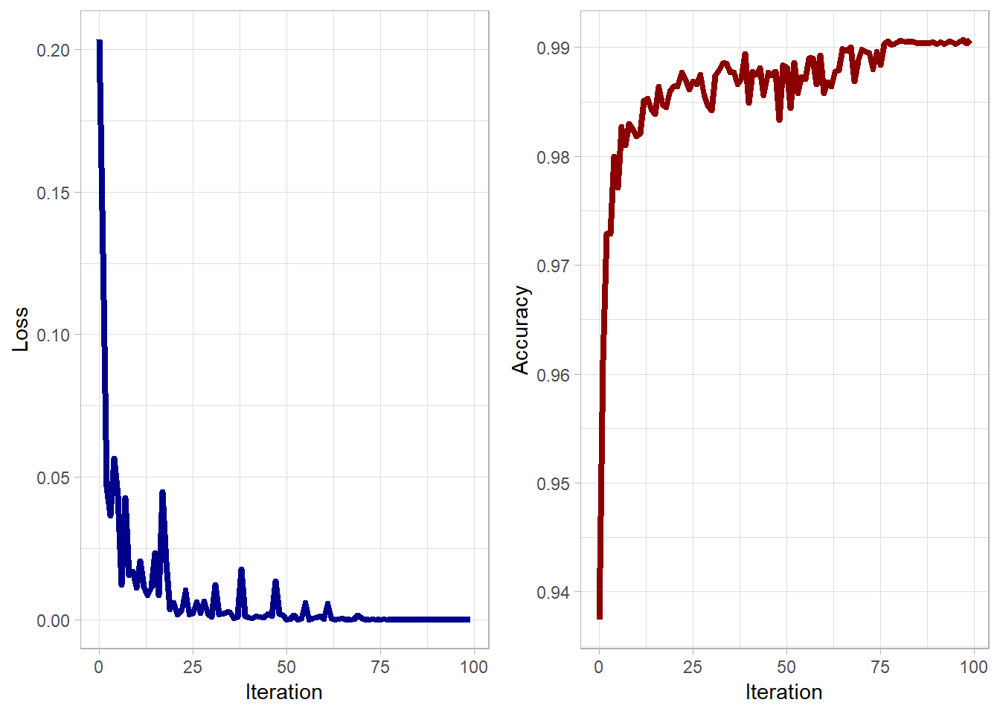

前言
循环神经网络（Recurrent Nerual Network, RNN）在Deep Learning领域中是一个经典有很重要的神经网络模型。RNN是在自然语言处理（Natural Language Processing, NLP）领域最先被使用发展起来的。在NLP中通常会处理一些文字句子，比如我们想做一个机器翻译，把中文转换成英文。初中生可能在翻译的时候只会逐个中文词翻译成英文，但高中生就可能会对翻译中的词进行调整，结合前后的词汇，那我们也希望机器这样做。
假设有一段对话：
A：你好吗？
B：我很好。
我们想让机器翻译成英文，对于A而言，机器可能在一些训练后很容易翻译成“How are you?”，但对于B可能就翻译成了“I’m ok.”。那就相当尴尬了~（想起某军的Are you ok?╭(●｀∀´●)╯）机器其实需要参考A问了什么，再来对B的回答进行翻译，才能获得比较好的回答翻译“I’m fine.”
RNN就是专门解决了处理序列化数据的问题，像上面这样的小例子。
简单循环神经网络
对于简单RNN，它由输入层，一个隐藏层和一个输出层构成的，像这样子：图1. 简单RNN示意图
先看左边的图时会觉得不能理解，但是如果将其展开得到右边的图，就比较好理解了。在\(t\)时刻，\(x_t\)作为输入的同时，还有上一个时刻隐藏层的\(h_{t-1}\)，以\(V\)为权重作为第\(t\)时刻的输入。我们用计算公式来表示，可以表示为： \[ h_t = f (U x_t + V h_{t-1})\\ o_t = \sigma (W h_t) \] 其中\(f\)和\(\sigma\)是激活函数（Activation function）。
如果将上面两个式子联合可以得到： \[ \begin{align} o_t &= \sigma (W h_t)\\ &= \sigma (W f (U x_t + V h_{t-1}))\\ &= \sigma (W f (U x_t + V f (U x_{t-1} + V h_{t-2})))\\ &=\ ... \end{align} \] 可以看到我们会得到一个循环向前的公式，循环神经网络的输出值\(o_t\)是受到前面历次输入值\(x_t, x_{t-1}, x_{t-2}, \dots\)的影响的。
深度RNN & 梯度消失与爆炸
在介绍完简单RNN后，我们会考虑添加更多的隐藏层，那就可以得到深度RNN（如图2）；在这样多个隐藏层的神经网络结构中，我们通过反向传播就可以计算更新网络的参数。图2. 深度RNN示意图
当神经网络中层数太多的话，可能就会出现梯度消失。举个例子：
假设我们用了激活函数sigmoid函数 \[ f(x) = \frac{1}{1+e^{-x}} \]
它的导数为 \[ f'(x) = f(x)(1-f(x)) \]
我们知道\(1 + e^{-x} > 1\)，所以可以得到\(0 < f(x) < 1\)。
对于导数\(f'(x)\)，我们可以通过\(-\frac{b}{2a}\)计算得到，当\(f(x) = 0.5\)时，\(f'(x)\)取得最大值为\(0.25\)。 
在反向传播计算过程中，每经过一个sigmoid函数，便需要乘以一个sigmoid函数的导数值，那残差就至少会被削减变为原来的0.25倍；如果整个循环神经网络的时间长度很长，那么可能残差传递到前面的某一时刻就基本为0了；这样会导致在往前的时刻中无法更新参数，这就是梯度消失。
同理，如果导数的最小值是不小于1的，那么残差在传递中就会一次比一次大，如果整个循环神经网络的时间长度很长，那每次参数的更新就会非常剧烈，这就是梯度爆炸。下面用数学推导表示梯度消失与梯度爆炸。
数学推导下的梯度消失与梯度爆炸
我们在前面的时候用计算公式表达了简单RNN： \[ h_t = f (U x_t + V h_{t-1})\\ o_t = \sigma (W h_t) \]
如果将公式写的更明细的话，可以表达为： \[ \begin{bmatrix} h_1^t\\ h_2^t\\ .\\ .\\ h_n^t \end{bmatrix} = f\bigg( \begin{bmatrix} u_{11} & u_{12} & \cdots & u_{1m}\\ u_{21} & u_{22} & \cdots & u_{2m}\\ . & . & . & .\\ . & . & . & .\\ u_{n1} & u_{n2} & \cdots & u_{nm}\\ \end{bmatrix} \begin{bmatrix} x_1\\ x_2\\ .\\ .\\ x_m \end{bmatrix} + \begin{bmatrix} v_{11} & v_{12} & \cdots & v_{1n}\\ v_{21} & v_{22} & \cdots & v_{2n}\\ . & . & . & .\\ . & . & . & .\\ v_{n1} & v_{n2} & \cdots & v_{nn}\\ \end{bmatrix} \begin{bmatrix} h_1^{t-1}\\ h_2^{t-1}\\ .\\ .\\ h_n^{t-1} \end{bmatrix} \bigg) \]
其中，\(h_j^t\)表示向量\(h\)的第\(j\)个元素在\(t\)时刻的值；\(u_ji\)表示输入层第\(i\)个神经元到循环层第\(j\)个神经元的权重；\(w_ij\)表示循环层第\(t-1\)时刻的第\(i\)个神经元到循环层第\(t\)个时刻的第\(j\)个神经元的权重。
我们用向量\(net_t\)来表示神经元在\(t\)时刻的加权输入： \[ net_t = Ux_t + Vh_{t-1}\\ h_t = f(net_t) \] 同样有： \[ h_{t-1} = f(net_{t-1}) \] 因此： \[ \frac{\partial net_t}{\partial net_{t-1}} = \frac{\partial net_t}{\partial h_{t-1}}\frac{\partial h_{t-1}}{\partial net_{t-1}} \] 由\(net_t = Ux_t + Vh_{t-1}\)式子，右边等式的第一部分可以推导得到： \[ \begin{align} \frac{\partial net_t}{\partial h_{t-1}} & = \begin{bmatrix} \frac{\partial net_1^t}{\partial h_1^{t-1}} & \frac{\partial net_1^t}{\partial h_2^{t-1}} & \cdots & \frac{\partial net_1^t}{\partial h_n^{t-1}}\\ \frac{\partial net_2^t}{\partial h_1^{t-1}} & \frac{\partial net_2^t}{\partial h_2^{t-1}} & \cdots & \frac{\partial net_2^t}{\partial h_n^{t-1}}\\ . & . & . & .\\ . & . & . & .\\ \frac{\partial net_n^t}{\partial h_1^{t-1}} & \frac{\partial net_n^t}{\partial h_2^{t-1}} & \cdots & \frac{\partial net_n^t}{\partial h_n^{t-1}}\\ \end{bmatrix}\\ &= \begin{bmatrix} v_{11} & v_{12} & \cdots & v_{1n}\\ v_{21} & v_{22} & \cdots & v_{2n}\\ . & . & . & .\\ . & . & . & .\\ v_{n1} & v_{n2} & \cdots & v_{nn}\\ \end{bmatrix}\\ &= V \end{align} \] 同理由\(h_{t-1} = f(net_{t-1})\)式子，右边等式的第二部分可以推导得到： \[ \begin{align} \frac{\partial h_{t-1}}{\partial net_{t-1}} &= \begin{bmatrix} \frac{\partial h_1^{t-1}}{\partial net_1^{t-1}} & \frac{\partial h_1^{t-1}}{\partial net_2^{t-1}} & \cdots & \frac{\partial h_1^{t-1}}{\partial net_n^{t-1}}\\ \frac{\partial h_2^{t-1}}{\partial net_1^{t-1}} & \frac{\partial h_2^{t-1}}{\partial net_2^{t-1}} & \cdots & \frac{\partial h_2^{t-1}}{\partial net_n^{t-1}}\\ . & . & . & .\\ . & . & . & .\\ \frac{\partial h_n^{t-1}}{\partial net_1^{t-1}} & \frac{\partial h_n^{t-1}}{\partial net_2^{t-1}} & \cdots & \frac{\partial h_n^{t-1}}{\partial net_n^{t-1}}\\ \end{bmatrix}\\ &= \begin{bmatrix} f'(net_1^{t-1}) & 0 & \cdots & 0\\ 0 & f'(net_2^{t-1}) & \cdots & 0\\ . & . & . & .\\ . & . & . & .\\ 0 & 0 & \cdots & f'(net_n^{t-1})\\ \end{bmatrix}\\ &= diag[f'(net_{t-1})] \end{align} \] 因此我们可以得到： \[ \begin{align} \frac{\partial net_t}{\partial net_{t-1}} &= \frac{\partial net_t}{\partial h_{t-1}}\frac{\partial h_{t-1}}{\partial net_{t-1}}\\ &= V diag[f'(net_{t-1})]\\ &= \begin{bmatrix} v_{11}f'(net_1^{t-1}) & v_{12}f'(net_2^{t-1}) & \cdots & v_{1n}f'(net_n^{t-1})\\ v_{21}f'(net_1^{t-1}) & v_{22}f'(net_2^{t-1}) & \cdots & v_{2n}f'(net_n^{t-1})\\ . & . & . & .\\ . & . & . & .\\ v_{n1}f'(net_1^{t-1}) & v_{n2}f'(net_2^{t-1}) & \cdots & v_{nn}f'(net_n^{t-1})\\ \end{bmatrix}\\ \end{align} \]
我们可以求得任意时刻\(k\)的残差值\(\delta_k\)： \[ \begin{align} \delta_k &= \frac{\partial E}{\partial net_k}\\ &= \frac{\partial E}{\partial net_t}\frac{\partial net_t}{\partial net_k}\\ &= \frac{\partial E}{\partial net_t}\frac{\partial net_t}{\partial net_{t-1}}\frac{\partial net_{t-1}}{\partial net_{t-2}}\cdots\frac{\partial net_{k+1}}{\partial net_k}\\ &= \delta_t V diag[f'(net_{t-1})]V diag[f'(net_{t-2})]\cdots V diag[f'(net_k)]\\ &= \delta_t \prod_{i=k}^{t-1}V diag[f'(net_i)] \end{align} \] 从上面式子我们可以得到： \[ \begin{align} & \delta_k = \delta_t \prod_{i=k}^{t-1}V diag[f'(net_i)]\\ \Rightarrow\ \ & ||\delta_k|| \leq ||\delta_t|| \prod_{i=k}^{t-1} ||V|| \cdot ||diag[f'(net_i)]||\\ \end{align} \] 其中模可以看作对\(\delta_k\)中每一项值得大小的度量，假定\(\beta_f\)和\(\beta_W\)分别是\(||diag[f'(net_i)]||\)和\(||V||\)的上界，那么 \[ ||\delta_k|| \leq ||\delta_t|| (\beta_f \beta_W)^{t-k} \] 显然，如果\(\beta_f \beta_W\)的乘积比1小或者比1大时，由于指数的缘故，那么残差就可能会变得很小几乎为0或者变得很大。前者就是梯度消失，后者就是梯度爆炸。所以，普通的RNN是无法处理长距离依赖的原因。经过科学家们的努力，终于在1997年，由Sepp Hochreiter和Jürgen Schmidhuber两位科学家提出了长短时间记忆（LSTM），解决了RNN这样的问题。
长短时间记忆（Long Short Term Memory, LSTM）
长短时间记忆网络在原来普通RNN的基础上再加了一个状态\(c\)，用来保存长期的状态，这个状态也称为单元状态（cell state）。图3. 普通RNN和LSTM
LSTM中输入有三个：\(x_t\)，\(h_{t-1}\)和\(c_{t-1}\)；而输出有两个：\(h_t\)和\(c_t\)；另外，LSTM引入了“门”或者“开关”这样的概念，用来控制不同阶段的数据输入和输出，分别是：
- 遗忘门（Forget gate）：控制单元状态\(c_{t-1}\)保留多少到\(c_t\)；它的计算公式为： \[
f_t = \sigma(U^{(f)}x_t + V^{(f)}h_{t-1})
\] 其中，\(\sigma\)是激活函数（一般sigmoid函数）。
结合上一时刻单元状态\(c_{t-1}\)，\(f_t\)决定了保留多少上一时刻单元状态，所以用乘积计算，计算公式为： \[ c_t = f_t\circ c_{t-1} \]
图4. 遗忘门示意图
图5. 遗忘门结合上一时刻单元状态示意图
这里的\(c_t\)只是计算过程中一个值，还不是输出时的单元状态。
- 输入门（Input gate）：控制输入\(x_t\)保存多少到\(c_t\)；它的计算公式为： \[
i_t = \sigma(U^{(i)}x_t + V^{(i)}h_{t-1})\\
\tilde{c}_t = \tanh (U^{(c)}x_t + V^{(c)}h_{t-1})
\]
其中，我们把\(\tilde{c}_t\)称为“候选状态”，结合从遗忘门出来的\(c_t\)，我们将三者结合，计算公式为： \[ \begin{align} c_t &= c_t + i_t\circ \tilde{c}_t\\ \Rightarrow c_t &= f_t\circ c_{t-1} + i_t\circ \tilde{c}_t \end{align} \]
图6. 输入门示意图
图7. 输入门结合候选状态和单元状态示意图
- 输出门（Output gate）：控制单元状态\(c_t\)输出多少到\(h_t\)；它的计算公式为： \[
e_t = \sigma(U^{(e)}x_t + V^{(e)}h_{t-1})\\
h_t = \tanh (c_t)\circ e_t
\]

图8. 输出门结合单元状态示意图
上面提及的参数在初始化设置为接近0的较小值，对于长短时间记忆网络的训练，让我们慢慢叙述~
LSTM的训练
残差值沿时间的反向传播计算
在推导之前，我们先假定每个gate的激活函数为sigmoid函数，而其中我们还涉及到了tanh函数，它们的公式及导数分别为： \[ \sigma(x) = \frac{1}{1+e^{-x}}\\ \sigma'(x) = \sigma(x)(1-\sigma(x))\\ \tanh(x) = \frac{e^x-e^{-x}}{e^x+e^{-x}}\\ \tanh'(x) = 1-\tanh(x)^2 \] 显然，它们的导数均可以用它们本身进行表示，在计算过程中，我们只需要计算它们各自的值，就可以计算得到对应导数的值。
另外，对于符号\(\circ\)，当作用于向量时，它的运算时对应元素的相乘，即： \[ \text{a}\circ \text{b} = \begin{bmatrix} a_1\\ a_2\\ a_3\\ \cdots\\ a_n \end{bmatrix} \circ \begin{bmatrix} b_1\\ b_2\\ b_3\\ \cdots\\ b_n \end{bmatrix} = \begin{bmatrix} a_1b_1\\ a_2b_2\\ a_3b_3\\ \cdots\\ a_nb_n \end{bmatrix} \] 当作用于向量和矩阵时，它的计算为： \[ \begin{align} \text{a}\ \circ \text{X} &= \begin{bmatrix} a_1\\ a_2\\ a_3\\ \cdots\\ a_n \end{bmatrix} \circ \begin{bmatrix} x_{11} & x_{12} & x_{13} & \cdots & x_{1n}\\ x_{21} & x_{22} & x_{23} & \cdots & x_{2n}\\ x_{31} & x_{32} & x_{33} & \cdots & x_{3n}\\ & & \cdots\\ x_{n1} & x_{n2} & x_{n3} & \cdots & x_{nn} \end{bmatrix}\\ &= \begin{bmatrix} a_1x_{11} & a_1x_{12} & a_1x_{13} & \cdots & a_1x_{1n}\\ a_2x_{21} & a_2x_{22} & a_2x_{23} & \cdots & a_2x_{2n}\\ a_3x_{31} & a_3x_{32} & a_3x_{33} & \cdots & a_3x_{3n}\\ & & \cdots\\ a_nx_{n1} & a_nx_{n2} & a_nx_{n3} & \cdots & a_nx_{nn} \end{bmatrix} \end{align} \] 当作用于矩阵和矩阵时，两个矩阵的对应位置的元素相乘。
同时，我们定义在\(t\)时刻，LSTM中的输出值为\(h_t\)，残差值\(\delta_t\)为\(\delta_t = \frac{\partial E}{\partial h_t}\)。
利用反向传播算法，我们需要得到的是前面时刻的残差值，假定现在我们先求上一时刻\(t-1\)时刻的残差值\(\delta_{t-1}\)。 \[ \begin{align} \delta_{t-1} &= \frac{\partial E}{\partial h_{t-1}}\\ &= \frac{\partial E}{\partial h_t}\frac{\partial h_t}{\partial h_{t-1}}\\ &= \delta_t\frac{\partial h_t}{\partial h_{t-1}} \end{align} \] 由前面的推导，我们知道 \[ h_t = \tanh(c_t)\circ e_t\\ c_t = f_t\circ c_{t-1} + i_t\circ \tilde{c}_t\\ f_t = \sigma(U^{(f)}x_t + V^{(f)}h_{t-1})\\ i_t = \sigma(U^{(i)}x_t + V^{(i)}h_{t-1})\\ \tilde{c}_t = \tanh (U^{(c)}x_t + V^{(c)}h_{t-1})\\ e_t = \sigma(U^{(e)}x_t + V^{(e)}h_{t-1}) \] 对于导数\(\frac{\partial h_t}{\partial h_{t-1}}\)，我们得到： \[ \frac{\partial h_t}{\partial h_{t-1}} = \frac{\partial h_t}{\partial e_t}\frac{\partial e_t}{\partial h_{t-1}} + \frac{\partial h_t}{\partial c_t}\frac{\partial c_t}{\partial f_t}\frac{\partial f_t}{\partial h_{t-1}} + \frac{\partial h_t}{\partial c_t}\frac{\partial c_t}{\partial i_t}\frac{\partial i_t}{\partial h_{t-1}} + \frac{\partial h_t}{\partial c_t}\frac{\partial c_t}{\partial \tilde{c}_t}\frac{\partial \tilde{c}_t}{\partial h_{t-1}} \] 由于 \[ \begin{align} \frac{\partial h_t}{\partial e_t} &= diag[\tanh(c_t)]\\ \frac{\partial e_t}{\partial h_{t-1}} &= diag[e_t\circ (1-e_t)]\ V^{(e)}\\ \frac{\partial h_t}{\partial c_t} &= diag[e_t\circ (1-\tanh(c_t)^2)]\\ \frac{\partial c_t}{\partial f_t} &= diag[c_{t-1}]\\ \frac{\partial c_t}{\partial i_t} &= diag[\tilde{c}_t]\\ \frac{\partial c_t}{\partial \tilde{c}_t} &= diag[i_t]\\ \frac{\partial f_t}{\partial h_{t-1}} &= diag[f_t\circ (1-f_t)]\ V^{(f)}\\ \frac{\partial i_t}{\partial h_{t-1}} &= diag[i_t\circ (1-i_t)]\ V^{(i)}\\ \frac{\partial \tilde{c}_t}{\partial h_{t-1}} &= diag[1-\tilde{c}_t^2]\ V^{(c)} \end{align} \] 因此， \[ \begin{align} \frac{\partial h_t}{\partial h_{t-1}} = &\ diag[\tanh(c_t)] diag[e_t\circ (1-e_t)] V^{(e)}\\ &\ + diag[e_t\circ (1-\tanh(c_t)^2)] diag[c_{t-1}] diag[f_t\circ (1-f_t)] V^{(f)}\\ &\ + diag[e_t\circ (1-\tanh(c_t)^2)] diag[\tilde{c}_t] diag[i_t\circ (1-i_t)] V^{(i)}\\ &\ + diag[e_t\circ (1-\tanh(c_t)^2)] diag[i_t] diag[1-\tilde{c}_t^2] V^{(c)}\\ = &\ \tanh(c_t)\circ e_t\circ (1-e_t) V^{(e)}\\ &\ + e_t\circ (1-\tanh(c_t)^2)\circ c_{t-1}\circ f_t\circ (1-f_t) V^{(f)}\\ &\ + e_t\circ (1-\tanh(c_t)^2)\circ \tilde{c}_t\circ i_t\circ (1-i_t)\\ &\ + e_t\circ (1-\tanh(c_t)^2)\circ i_t\circ (1-\tilde{c}_t^2) \end{align} \] 可以求得\(t-1\)时刻的残差值： \[ \begin{align} \delta_{t-1} &= \delta_t\frac{\partial h_t}{\partial h_{t-1}}\\ &= \delta_t\circ \tanh(c_t)\circ e_t\circ (1-e_t) V^{(e)}\\ &\ + \delta_t\circ e_t\circ (1-\tanh(c_t)^2)\circ c_{t-1}\circ f_t\circ (1-f_t) V^{(f)}\\ &\ + \delta_t\circ e_t\circ (1-\tanh(c_t)^2)\circ \tilde{c}_t\circ i_t\circ (1-i_t)\\ &\ + \delta_t\circ e_t\circ (1-\tanh(c_t)^2)\circ i_t\circ (1-\tilde{c}_t^2) \end{align} \] 同理，利用 \[ \begin{align} \delta_k &= \delta_t\frac{\partial h_t}{\partial h_k}\\ &= \delta_t\frac{\partial h_t}{\partial h_{t-1}}\frac{\partial h_{t-1}}{\partial h_k}\\ &= \delta_t\frac{\partial h_t}{\partial h_{t-1}}\frac{\partial h_{t-1}}{\partial h_{t-2}} \cdots \frac{\partial h_{k+1}}{\partial h_k}\\ \end{align} \] 可以求得任意时刻\(k\)的残差值。
对于残差值沿隐藏层的反向传播，其计算方法与之前提及的反向传播基本一致。
- 输出门（Output gate）：控制单元状态\(c_t\)输出多少到\(h_t\)；它的计算公式为： \[
e_t = \sigma(U^{(e)}x_t + V^{(e)}h_{t-1})\\
h_t = \tanh (c_t)\circ e_t
\]
实践出真知
import tensorflow as tf
import pandas as pd
from tensorflow.examples.tutorials.mnist import input_data
mnist = input_data.read_data_sets("mnist/")
# 训练参数
n_epoches = 100
batch_size = 150
Learning_rate = 0.001
# 网络参数，把28x28的图片数据拆成28行的时序数据喂进RNN
n_inputs = 28
n_steps = 28
n_hiddens = 150
n_outputs = 10 # 10分类
# 输入tensors
X = tf.placeholder(tf.float32, [None, n_steps, n_inputs])
y = tf.placeholder(tf.int32, [None])
# 构建RNN结构
basic_cell = tf.contrib.rnn.BasicLSTMCell(num_units=n_hiddens, state_is_tuple=True)
# basic_cell = tf.contrib.rnn.BasicRNNCell(num_units=n_hiddens)
# basic_cell = tf.nn.rnn_cell.BasicRNNCell(num_units=n_hiddens) # 另一种创建基本单元的方式
outputs, states = tf.nn.dynamic_rnn(basic_cell, X, dtype=tf.float32)
# 前向传播，定义损失函数、优化器
logits = tf.layers.dense(states[-1], n_outputs) # 与states tensor连接的全连接层，LSTM时为states[-1]，即h张量
cross_entropy = tf.nn.sparse_softmax_cross_entropy_with_logits(labels=y, logits=logits)
loss = tf.reduce_mean(cross_entropy)
optimizer = tf.train.AdamOptimizer(learning_rate=Learning_rate)
train_op = optimizer.minimize(loss)
prediction = tf.nn.in_top_k(logits, y, 1)
accuracy = tf.reduce_mean(tf.cast(prediction, tf.float32)) # cast函数将tensor转换为指定类型
# 从MNIST中读取数据
X_test = mnist.test.images.reshape([-1, n_steps, n_inputs])
y_test = mnist.test.labels
# 训练阶段
init = tf.global_variables_initializer()
loss_list = []
accuracy_list = []
with tf.Session() as sess:
sess.run(init)
n_batches = mnist.train.num_examples // batch_size # 整除返回整数部分
# print("Batch_number: {}".format(n_batches))
for epoch in range(n_epoches):
for iteration in range(n_batches):
X_batch, y_batch = mnist.train.next_batch(batch_size)
X_batch = X_batch.reshape([-1, n_steps, n_inputs])
sess.run(train_op, feed_dict={X: X_batch, y: y_batch})
loss_train = loss.eval(feed_dict={X: X_batch, y: y_batch})
loss_list.append(loss_train)
acc_train = accuracy.eval(feed_dict={X: X_batch, y: y_batch})
acc_test = accuracy.eval(feed_dict={X: X_test, y: y_test})
accuracy_list.append(acc_test)
print(epoch, "Train accuracy: {:.3f}".format(acc_train), "Test accuracy: {:.3f}".format(acc_test))
# 导出损失和准确率，方便绘图
loss_readout = pd.DataFrame(loss_list)
loss_readout.to_csv('csv/RNN_LSTM_loss.csv')
acc_readout = pd.DataFrame(accuracy_list)
acc_readout.to_csv('csv/RNN_LSTM_accuracy.csv')运行结果可以绘制出loss和accuracy两图： 
Reference
1.hanbingtao. 零基础入门深度学习(5) - 循环神经网络
2.hanbingtao. 零基础入门深度学习(6) - 长短时记忆网络(LSTM)
3.罗冬日. TensorFlow入门与实战
4.郑思座. 循环神经网络（RNN）以及简单TensorFlow实例